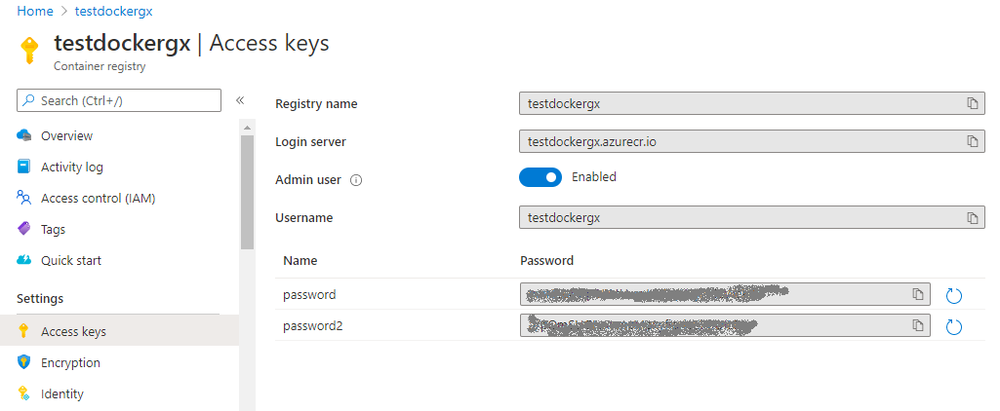
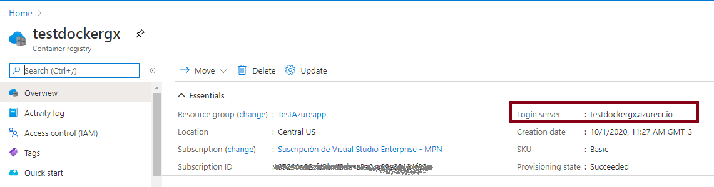
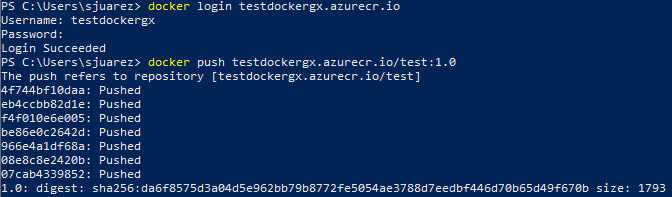
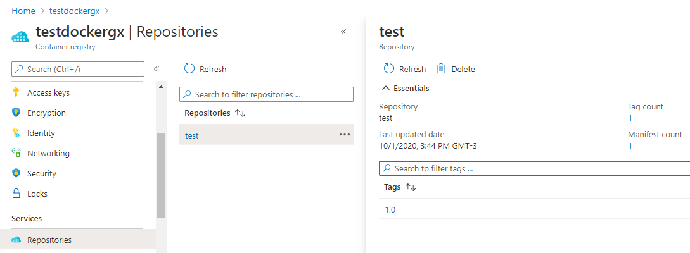

In this document, we show how to deploy an application to an Azure Kubernetes Service (AKS) cluster. The application has been previously packaged into a container image using the Application Deployment tool. Requirements to follow this tutorial: Azure CLI. Summary
Create an Azure Container RegistryFirst, the Docker image will have to be pushed to an Azure Container Registry (ACR). So, at the Azure portal, or using Azure CLI, create an Azure resource and an Azure Container Registry (1). $ az acr login --name <acrName> You'll be asked to enter the credentials, which you can get at the Access Keys panel of the ACR instance in the Azure portal:  Tag your Docker imageGet the login server information of your ACR, as you will have to use it to tag (2) the container image:  Now, tag your local Docker image with the ACR Login Server address of the container registry, for example: docker tag sjuarez2020/test:1.0 testdockergx.azurecr.io/test:1.0 To confirm that the tags are applied, run "docker images" at the command line. $ docker images Push your Docker image to the registryFollowing the example above, it would be: $ docker push testdockergx.azurecr.io/test:1.0 It may be necessary to log in first.  If you followed the previous steps, you have the container image already stored in a private Azure Container Registry instance.  Create the AKS clusterOne possibility for creating the AKS cluster is by the command line: $ az aks create --resource-group TestAzureapp --name testaksgx --node-count 2 --node-vm-size Standard_B2s --enable-managed-identity --attach-acr testdockergx --generate-ssh-keys Deploy the application to KubernetesTo deploy the application, use the kubectl command. First, get the AKS credentials; to do so, you need to log in: $ az login Then: $ az aks get-credentials --resource-group TestAzureapp --name testaksgx Merged "testaksgx" as current context in C:\Users\sjuarez\.kube\config Now you can apply the desired settings to your Kubernetes cluster. Do the following for all the metadata files you have: $ kubectl apply -f .\K8s-DeploymentUnit1-App.yaml service/deploymentunit1-svc created Important: The Application Deployment tool generates Kubernetes metadata. See How to Deploy an Application to a Kubernetes cluster. Note that the Exposed Service Type property, in this case, was set to Load Balancer because it is deployed to a cloud service. Run the applicationUsing the following command you can find out where the app is running (external IP), so you can test it. In this example, "test1app" is the name of the namespace service. $ kubectl get service -n test1app NAME TYPE CLUSTER-IP EXTERNAL-IP PORT(S) AGE deploymentunit1-svc LoadBalancer 10.0.47.234 52.154.207.98 80:31568/TCP 75s gx-redis-svc ClusterIP 10.0.114.75 <none> 6379/TCP 52s References(1) How to create an Azure Container Registry. See also |
| Backlinks | ||
| Toc:Application Deployment tool | Expanded DevOps with GeneXus 17 | How to Deploy an Application to a Kubernetes cluster |